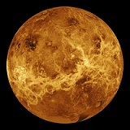
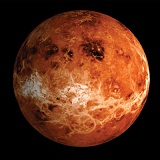
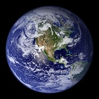
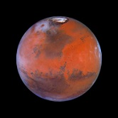

Conhecem-se atualmente nove principais planetas. Estão geralmente divididos em dois grupos: os planetas interiores (Mercúrio, Vénus, Terra e Marte) e os planetas exteriores (Júpiter, Saturno, Úrano e Neptuno). Os planetas interiores são pequenos e compostos principalmente por rochas e ferro. Os planetas exteriores são muito maiores e são principalmente compostos por hidrogénio, hélio e gelo. Plutão não pertence a nenhum dos grupos, existindo um contínuo debate sobre se Plutão deve ser reconhecido como um planeta principal.
 De todos os planetas, Mercúrio é o planeta que está em órbita mais próxima do Sol, a uma distância média de aproximadamente 58 milhões de km (cerca de 36 milhões de milhas). O diâmetro do planeta é de 4.879 km (3.032 milhas) e o respetivo volume e massa são cerca de um dezoito avos relativamente à Terra. A densidade média de Mercúrio é aproximadamente igual à da Terra, sendo superior a qualquer uma dos outros planetas. A força de gravidade na superfície do planeta é de cerca de um terço da superfície da Terra ou cerca de duas vezes a gravidade da superfície na Lua.
 Com a exceção do Sol e da Lua, Vénus é o objeto mais brilhante no céu. O planeta denomina-se a estrela da manhã quando aparece a este no nascer do sol e a estrela da tarde quando está a oeste ao pôr do sol. Na antiguidade, a estrela da tarde denominava-se Vésper e a estrela da manhã denominava-se Fósforo ou Lúcifer. Devido às distâncias das órbitas de Vénus e da Terra relativamente ao Sol, Vénus só está visível cerca de três horas antes do nascer do sol ou três horas após o pôr do Sol.
 A Terra é o único planeta conhecido como tendo vida, constituindo a origem dos seres humanos. Quando observada a partir do espaço, a Terra assemelha-se a um berlinde azul grande com nuvens brancas em turbilhão a flutuarem por cima de oceanos azuis. Cerca de 71 por cento da superfície da Terra está coberta por água, essencial à vida. O restante é terra, a maior parte na forma de continentes acima do nível do mar.
 Marte é o quarto planeta a contar do Sol e gira à volta do Sol a uma distância média de cerca de 228 milhões de km (cerca de 141 milhões de milhas). O nome de Marte tem origem no deus romano da guerra, sendo por vezes chamado de o planeta vermelho devido ao vermelho ardente que apresenta no céu noturno da Terra. Marte é um planeta relativamente pequeno, com cerca de metade do diâmetro da Terra e com cerca de um décimo da massa da Terra.